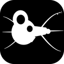
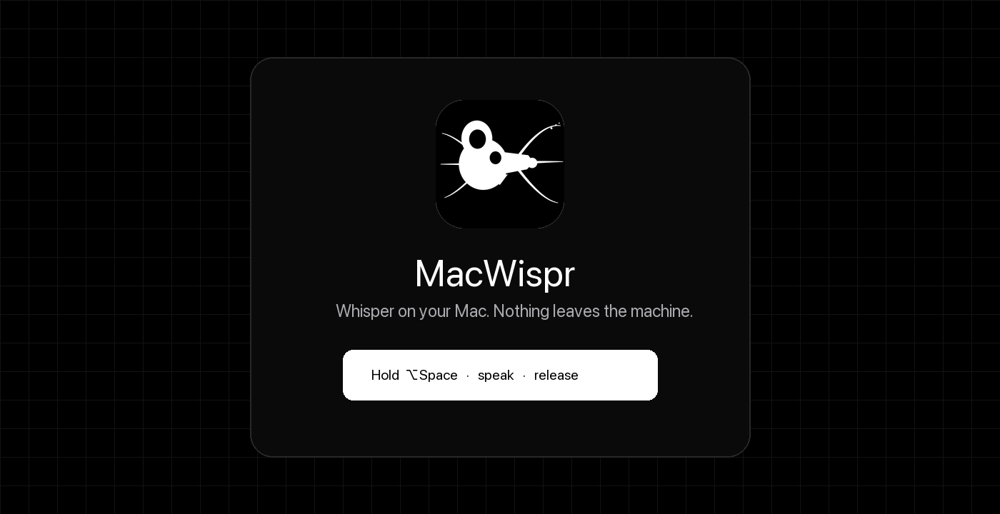

MacWisprFree, open-source voice dictation for Mac. Runs on-device with Qwen3-ASR by default — or bring your own OpenAI / ElevenLabs key for cloud speech-to-text.

Hold ⌥Space, talk, release. Insert into Slack, VS Code, browsers, email — anywhere.
⌥Space hold-to-speak or toggle mode, plus menu-bar controls when the hotkey is flaky.
Qwen3-ASR 0.6B / 1.7B (MLX 8-bit) on Apple Silicon. Private by default — no account required.
Optional local Qwen polish SFT (1.2.4-beta) or OpenAI; lists/cleanup via the model — not a fixed filler word list. Auto-capitalize optional.
Teach names and jargon once. Biases local ASR, OpenAI prompts, and ElevenLabs keyterms.
Weekly dashboard for words, speaking time, and estimated typing time avoided.
Clipboard, type into the active app, or Both (default in 1.2).
Prefer cloud accuracy? Paste your key in Settings. Keys never leave your Mac except to call the provider you chose.
Qwen3-ASR via MLX. Offline after the model download. Fast warm latency (~0.3s on 10s audio for 0.6B).
gpt-4o-mini-transcribe for speech-to-text. Optional gpt-4o-mini polish with the same key.
Scribe v2 speech-to-text. Strong multilingual accuracy when you want cloud quality.
Apple Silicon, macOS 14+. Microphone + Accessibility required.
Grab MacWispr-macos-arm64.dmg from
GitHub Releases (direct DMG download).
Open the DMG and drag MacWispr into Applications. Right-click → Open the first time if Gatekeeper warns.
Microphone + Accessibility. Hold ⌥Space, speak, release. Optional: Settings → Transcription for BYOK.
MacWispr is a free, MIT-licensed alternative to commercial dictation apps. It started as an on-device Qwen3-ASR wrapper for Apple Silicon and now also supports optional cloud providers when you bring your own API keys.
No MacWispr account. Optional opt-in anonymous telemetry (off by default). History and keys stay on your machine (Application Support + Keychain).
| Item | Detail |
|---|---|
| Version | 1.2.2 |
| Platform | macOS 14+ · Apple Silicon |
| Default STT | Qwen3-ASR 0.6B MLX 8-bit |
| Cloud STT | OpenAI · ElevenLabs (BYOK) |
| License | MIT |